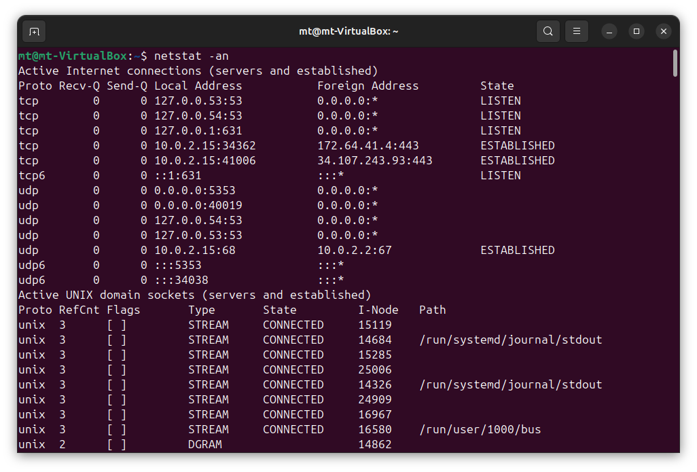

The following outlines some Essential Network Commands used between Windows, Linux, as well as macOS.
There are various scenarios we may find ourselves in where any one of these commands can become beneficial. One of the most common is troubleshooting and diagnosing connectivity issues. Other scenarios include resolving DNS issues, addressing IP conflicts, or exploring how traffic flows through your network. The command line offers powerful tools to dive deeper into what may be going on.
This blog walks through several commonly used networking commands that help uncover useful information such as IP configurations, DNS resolution, routing, active connections, network paths, and more. It’s based on material I put together in my Cross-Platform Networking Commands tutorial, which is available through my GitHub Pages portfolio.
The goal is to offer a practical reference — especially for those getting started in IT — by sharing real examples and tools that are helpful in both personal labs and professional environments.
ping
Ping is the first responder on the network — it sends tiny data packets (ICMP echo requests) to a target IP or domain and waits for a reply, letting you verify that a device is reachable and measure how long the round-trip takes. It can be thought of as the digital equivalent of shouting "You there?" and listening for a reply.

ipconfig / ipconfig /all
ifconfig / ip a
These commands reveal a given system’s IP configuration on the network. Whether you're using ipconfig on Windows or ifconfig / ip a on Linux, they display your interface’s IP address, subnet, gateway, and more — essential for understanding how your machine is plugged into the network.
Windows

Linux


arp -a
The arp -a command lets you peek behind the scenes of local communications by listing the Address Resolution Protocol (ARP) table. It maps IP addresses to MAC addresses — like your system’s contact book for nearby devices.

nslookup
nslookup is a Windows DNS investigation tool — it asks a DNS server for information about domain names and IP addresses. Whether you're hunting down where a website lives or diagnosing DNS failures, this command gives you a direct line to the domain name system.

host / dig
These Linux-based DNS tools go deeper than nslookup. host offers quick domain-to-IP lookups, while dig (Domain Information Groper) gives detailed query reports straight from DNS servers. They're like the X-ray scanners of DNS troubleshooting.

netstat -a / netstat -an
netstat exposes your system’s open doors — it shows which ports are listening, which connections are active, and which processes are using them. Use it to find suspicious activity, verify services, or see who your system is “talking” to.


tracert
Short for “trace route,” this Windows command traces the path packets take to reach a destination. It lists each network hop along the way, revealing delays, outages, or routing quirks that might be slowing things down.

pathping
pathping is a Windows command that is like ping and tracert merged into one — but with a twist. It sends pings to every hop along the path and calculates packet loss and latency at each point. It's the network path’s health report, not just its roadmap.
traceroute
The Linux cousin to tracert, traceroute traces the journey of packets through the internet. Each hop is revealed along the route to your target, helping you visualize where things slow down, drop, or take detours in the digital world.

route print
route -n / ip route
These commands unveil your system’s routing table — the rules it follows to decide where to send packets. route print on Windows and route on Linux give you a map of how traffic is directed across gateways and networks.
Windows

Linux

Mastering these Essential Network Commands equips you with the tools to confidently troubleshoot, investigate, and understand what's happening on a system or network whether you're working with Windows, Linux, or macOS. From verifying connectivity with ping, to mapping routes with tracert or traceroute, to inspecting DNS responses to active connections, these commands are foundational for anyone in IT, cybersecurity, or system/network administration.
While these tools may seem basic, they’re often the first place professionals turn when diagnosing issues — and knowing how to interpret their output can set you apart as someone who truly understands how networks function.
As you continue building your technical skills, revisit these commands in different scenarios, experiment with their options, and incorporate them into your troubleshooting workflow. The command line doesn’t just tell you what’s wrong — it teaches you how systems behave under the hood.
Thanks for reading — and feel free to explore the full hands-on version of this guide in my Cross-Platform Networking Commands on GitHub, or visit more technical write-ups on my GitHub Pages Portfolio.